User guide
This guide is aimed to Users, there is also one for Admins and for Sysadmins.
Introduction
There are two main entities (objects) types: Experiments and Resources. Experiments are owned by a particular user, whereas Resources belong to a team.
While similar, they have a few differences:
Resources can be booked
Experiments templates can be created by users
Resources templates (Resources Categories) can only be created by Admins
They still share a lot of attributes, such as tags, category, status, links, etc…
Experiments
Let’s start with the Experiments, because they are the core of a lab notebook. Select Experiments from the main menu. It will display a list of Experiments, this is “Show mode”.
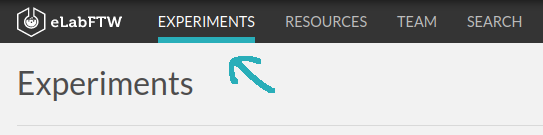Show mode
List of Experiments in Show mode
If you prefer to list them with a different, more compact display, click the Switch layout button on the top right of the first listed Experiment:
Switch layout button
They will appear like this:
Alternate listing layout
Experiments are listed by default mixed with experiments from other users in your team. To see only your experiments on this page, you need to change the Scope from the button on the right:
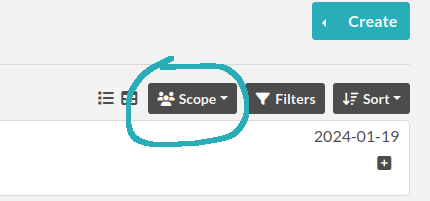Set it to “Self” to only display your own Experiments. Note that this button is independent from the similar ones on the Resources or Templates pages, and your selection is remembered.
Once logged in, you can create an experiment by clicking the «Create» button on the top right of the screen and selecting a template (or not!). You will then be presented with an «edition» page (you can see ‘mode=edit’ in the URL); the two other modes being ‘view’: display a single experiment, and ‘show’: display a list of experiments.
An experiment is composed of:
A title
The main text content
These are the two required elements. In fact, only the title is required as the main content can be empty.
Edit mode
Toolbar
In edit mode, the top part of the page displays a toolbar with several actions available:
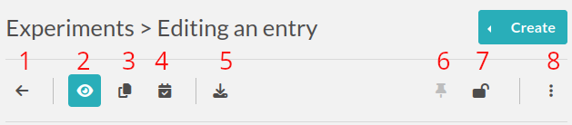Go back to the listing
Go into “View” mode
Duplicate the experiment: will copy all content except attachments, change the Status to the default one, and set the Date to today’s date
Timestamp experiment: create a signed, legally binding snapshot of the experiment and store it alongside the attached files in an immutable archive
Export menu: export the experiment in various formats (PDF, ELN, CSV, etc…)
Pin the experiment: make it appear on top of the listing at all times
Lock/Unlock experiment: prevent further edition. If you’re the one locking it, you’ll be able to unlock it, but if it’s locked by someone else, you won’t
Ellipsis menu: - See revisions: the revisions system keeps track of changes in the main text of the experiment - See changelog: the changelog system keeps track of all the other changes of the experiment - Archive/Unarchive: allow hiding the entry from the default listing - Delete: perform a soft-deletion of the experiment: mark the experiment as deleted but keep it in the backend database
Date (Started on)
The date is today’s date by default. You can edit it as you wish. The effective creation timestamp is stored in the backend database in another (read-only) attribute.
ID
This attribute is not editable and corresponds to the unique (scoped to the instance), immutable ID of the entry.
Custom ID
This attribute (null by default) can be set as a number, after selecting a Category. This number will then be automatically incremented when a new experiment of that category is created. One can also click the “Get next” button to fetch the next ID available for entries of this Category. The Custom ID is then displayed before the title.
Title
The title of your experiment. A duplicated experiment will have a «I» character appended to the title upon creation.
Category
You can assign a “Category” to your experiments. Only an Admin can define the available categories in your team. They can correspond to projects or types of experiments for instance. It also makes it easier to browse a group of experiments by looking for entries within that category.
Status
This useful feature lets you set the ‘status’ of an experiment. By default you can have:
Running (selected upon creation)
Need to be redone
Success
Fail
These status can be modified completely by the admin in the admin panel.
Permissions
The “Visibility” and “Can write” part allow you to control who can access this entry. Click the Edit button to display a menu and add or remove permissions.
Experiment (body)
This is where you describe your experiment and write your results. It is a rich text editor where you can have formatting, tables, colors, images, links, etc…
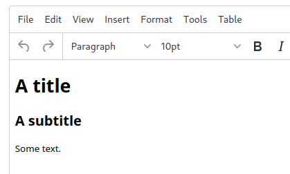
Inserting an image
To insert an image in the main text, simple drag and drop it in the text zone. You can also insert an already uploaded image by selecting “Insert in the text at cursor position” from the uploaded file menu (top right, three vertical dots).
Importing templates
You can use the Import > Templates menu to select from existing experiments templates and import them directly in your text, which allows you to compose an experiment by merging several templates.
Using markdown
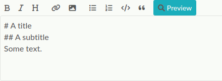
You can also use markdown for the main text. Switch editor by clicking the Switch editor button at the bottom right of the main text edition zone. If you’d like the editor to become default, go to your Settings and enable “Disable the rich text editor and write Markdown directly”.
Tables
If you add tables you might want to sort the data in the table dynamically. eLabFTW got you covered. Sort icons will be displayed in view mode when so called header cells (<th>) are defined and a table is set sortable. The table should have column names in the top row. You can select the top row with the mouse by clicking the left mouse button on the leftmost cell and while keeping the mouse button pressed move the mouse to the rightmost cell. Release the mouse button. The top row should be highlighted now. Next, from the rich text editor menu select «Table» → «Cell» → «Cell properties». In the dialog change «Cell type» from «Cell» (<td>) to «Header cell» (<th>). Finally, you can activate the sorting by clicking the «sortable table» icon (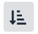) in the tool bar. The icon will also indicate whether a selected table is sortable. After you saved the changes you can go to view mode and dynamically sort the table. The changed order is not stored in eLabFTW. Merged cells in the top/header row (colspan) and in columns (rowspan) are not supported.
{kind=link}
Using LaTeX
It is possible to express mathematical/chemical notations in eLabFTW, and they will be rendered properly in view mode but also in the pdf export.
For this eLabFTW uses Mathjax with ams extension.
Try this (make sure it is not pasted between <pre> tags!):
$$\sum_{i=0}^n i^2 = \frac{(n^2+n)(2n+1)}{6}$$
Use one $ for inline mode and $$ for block mode.
Miscellaneous
You can insert a timestamp by clicking the clock icon or “Ctrl-Shift-d”. You can also insert code snippets with highlighting, special characters, horizontal lines, etc…
Steps
Steps are a way to list the things one need to do during the experiment. So you can write several steps, and once they are done, click the checkbox to declare them finished. This is quite useful for long experiments spanning over several days, where the “Next step” will be shown in Show mode (index list), so you can see at one glance what is the next thing to do for this particular experiment.
Note that you can also declare steps in a template.
Linked items
This field allows you to link an item from the database. Just begin to type the name of what you want to link and you will see an autocompletion list appear. Select the one you want and press Enter. The number of links is not limited.
This feature can also be used to link an experiment to a particular Project. If you have a «Project» Item Type and have a Project item in your database, you will then be able to see all experiments linked to this project by clicking the Link icon.
Linked experiments
Same as above, but for experiments.
Attach a file
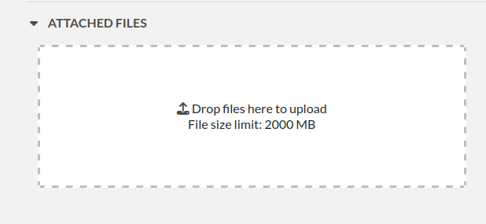You can click this region to open a file browser, or drag-and-drop a file inside. The file size limit depends on the server configuration, but there is no limit on file type. If you upload an image, a thumbnail will be created. There is no limit on the number of files you can attach to an experiment.
Some files are recognized by eLabFTW:
molecules files such as cif, pdb, sdf, mol files, they will display the molecule in 2D or 3D
DNA files such as fasta, gb, ape, dna, gff, they will display a fully featured viewer
images such as png, jpg, gif or tiff will get a thumbnail
pdf files also get a thumbnail and can optionally be included in pdf exports
View mode of experiment
In the view mode, you will find an actions button bar in the upper left part:
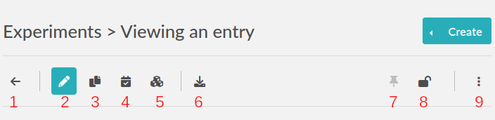1. Go back
Go back to the listing.
2. Edit
Switch to edit mode.
3. Duplicate
Duplicating an experiment allows you to quickly create a new entry with the same Title, tags, body and links, but with today’s date and a running status. Uploaded files are not duplicated. A «I» character will be added to the title to denote that it is a replicate.
4. Timestamp
When you click this button, a timestamp archive is created. Timestamping an entry involves generating a full JSON export of the entry and creating a cryptographic hash of that data. This hash is then sent to a trusted third party: the TimeStamping Authority (TSA).
The TSA acknowledges the existence of the data and sends back a signed token, which serves as proof that the data existed at that specific time. This process follows the RFC 3161 standard for Trusted Timestamping.
The timestamped data and its token are then saved in the “Attached Files” section of the experiment as a zip file. This file is initially in an “Archived” state, meaning it is hidden from view by default. To view archived files, click the “Show Archived” button on the right side of the “Uploaded Files” section in edit mode:
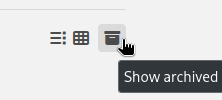This timestamp archive is immutable and cannot be modified or deleted.
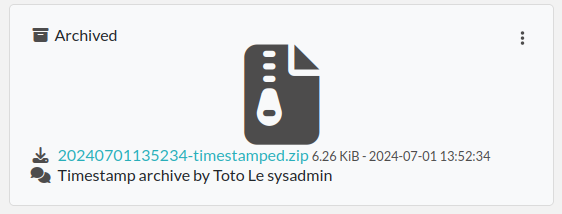5. Blockchain timestamp
This button, representing blocks, will do the same timestamping as above, except it will use the blockchain technology and the service provided by the BloxBerg consortium. You can learn more about it here: BloxBerg website.
7. Toggle pin
Clicking this icon will make this entry appear on top of the listing (pin entry).
8. Toggle lock
The lock icon allows you to lock the entry to prevent further editing. If you lock it yourself, you can later unlock it, but if it is locked by an admin, a user won’t be able to unlock it.
elabid
In the bottom right part of the experiment, you can see something like: «Unique elabid: 20150526-e72646c3ecf59b4f72147a52707629150bca0f91». This number is unique to each experiment, and immutable (won’t ever change). You can use it to reference an experiment with an external database.
Templates
In order to save time when creating Experiments, eLabFTW features a Templates system for Experiments.
It is recommended to create Templates for experiments you often do. You can think of a Template as a skeleton of a real experiment. To create a template, select “Templates” from the User menu.
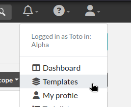Then, click the “Create” button, enter a title, and start editing your template. Once you are satisfied with it, click save. As you can see, you can have different permissions for the template itself, and for the Experiment that will be created from that template.
By default, the template is “pinned”, which means it will appear in the pop up window when you click “Create” and also in the menu next to the “Create” button on the “Experiments” page. If at some point you do not wish to have this template available in this menu, you can toggle its pinned status by clicking the thumbtack icon:
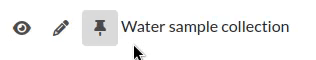As with Experiments or Resources, use the Scope button to select what you wish to be listed: only your own Templates (Self) or more.
Resources
Resources are similar to Experiments, but serve a different purpose: listing and organizing things that are used in Experiments.
Only a team Admin can define the Resources Categories from the Admin Panel. Resources Categories could be:
Antibodies
Microscopes
Plasmids
Drugs
Chemicals
Equipment
Projects
Resources’ default permissions allow anyone from the Team to edit them, but you are free to configure them differently.
Look at the Importing data section to learn how to import your Resources from a spreadsheet file or through the API.
Once you have your Resources present, you can mention them in your Experiments by typing # and their title, and selecting the proposed autocompletion, or use directly the Link system to link them to an Experiment.
Furthermore, Resources can be made bookable, see section below.
Booking resources
It is possible to use the scheduler (calendar) present on the Team page’s first tab to book resources.
Making a resource bookable
In order to book a resource, it needs to be bookable (they are not by default). To do that, go to the resource, and click “Modify booking parameters” from the top right menu with three vertical dots:
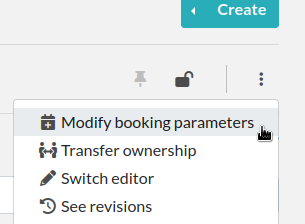This will show a modal window with various settings:
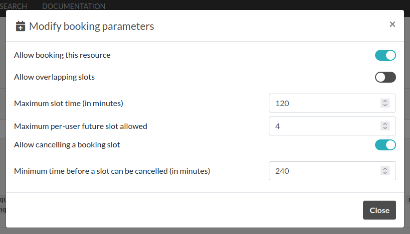Setting |
Description |
|---|---|
Allow booking this resource |
This is a general toggle to allow booking of the resource |
Allow overlapping slots |
Control whether it is allowed to have more than one booking slot at the same time |
Maximum slot time (in minutes) |
Maximum number of minutes allowed for a single booking slot |
Maximum per-user future slot allowed |
Number of future slots allowed for a particular user/resource couple |
Allow cancelling a booking slot |
Control whether users are allowed to cancel a booking |
Minimum time before a slot can be cancelled (in minutes) |
If “now” is closer than this number of minutes to the start of the event, it will not be possible to cancel it |
Adjusting permissions
When a resource is bookable, a new permission appears: “Can book”:
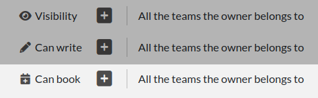By default, it will match who can read the entry, but it can be adjusted to fine tune who exactly has access to this resource for booking it.
Using the scheduler
Once all is set, users can click the “Book item” button in the toolbar, or select it from the Scheduler page, and click the calendar to drag a booking slot.
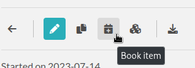Clicking an existing slot will display a modal window allowing several options such as binding the slot to an experiment or another resource, or cancel booking, with or without sending a notification to users.
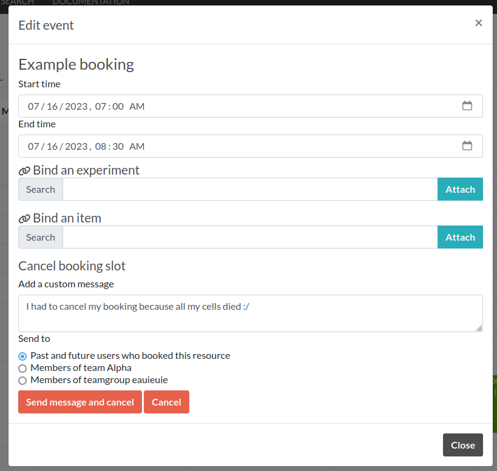Note: “Past and future users who booked this resource” means all users who booked the resource in the past two months and the ones who booked it in the upcoming month.
User panel
The user panel is where you can adjust preferences for your account. You can access it by clicking the link in the bottom left of every page, or through the user menu in the top right.
Preferences tab
From here you can select a language, adjust the display settings, change the keyboard shortcuts, modify the PDF settings, select a different text editor and set the default permission settings.
Account tab
This page allows you to modify your email/password, activate multi-factor authentication and change your name or add your ORCID if you have one.
What is two factor authentication?
Multi-factor authentication, MFA (or Two-factor authentication, 2FA) is a mechanism to further protect your account. After logging in with your password, you will need to enter a 6 digits code that changes every 30 seconds. This code will be displayed by a special application on your cellphone. If you have never used such a mechanism, you need to first install a 2FA application on your phone.
For Android phones, the recommended application is Aegis (Open Source).
For iPhone, you can use Authy (Proprietary but with good features).
If you already have a 2FA application, eLabFTW can work with it: you don’t need to install another application.
Once this application is installed, on the eLabFTW page, select YES to “Use two-factor authentication?” and click Save. You will then be presented with a QR code, scan it with the application on your phone and enter the code. That’s it, now your account is secured with multi-factor authentication.
Note: it is highly recommended to enable 2FA wherever you can.
Templates tab
Manage your templates. Once a template has been created, you can add tags, steps and links to it. It will then be available from the Create menu.
Api keys tab
Create an API key for your account from this page. An API key is like a username+password for your account. It allows you to interact with eLabFTW programmatically, through the REST API. See API documentation.
How to have folders or projects grouping experiments?
There are several options:
Use Categories for experiments: they are defined by an Admin and are common to the Team.
Use tags/favorite tags: user or Admin defined, depending on the Team settings (by default users can create new tags).
Use a Resource of Category “Project” and the link system to link Experiments to that Project.
Directly link experiments together using the link system.
First, try to go beyond the nested, tree-like structure of hierarchical folders.
Imagine you have an experiment which is:
about “Protein MR73”
using “Western blot”
an external collaboration
with “HEK cells”
Now if that experiment was a file, you might want to store it in “Collaborations > Western Blot > MR73” maybe. Or “Project MR73 > Collaborations > HEK”?
But what if you have another one that is also using HEK cells but has nothing in common with the previous one. How would you go about looking for all the experiments with HEK? And all the experiments related to MR73 that involve a Western Blot?
In a traditional folder structure, you would need to search for it in almost each sub-folders.
Enter tags.
Tags
Tags are a way to label your experiments (and database objects) with defined keywords and you can have as many as you want!
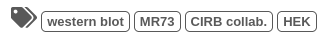Now with the experiments correctly tagged, finding them through different search angles becomes easy! You can search for one tag or many tags directly from the main page.
Using Projects
There is also another way to group experiments together, that you can use along with tags. It’s using a Resource of category: Project.
Go to the Admin Panel and create a Resource Category: “Project”. Go to the Resources tab and create a new “Project” entry describing a group of experiments, a project. Go to the Experiments tab and create an experiment. In the field “Linked resources”, type the name of the project and click on the autocompletion field appearing, and press enter (or click outside). This experiment is now linked to the project. So you can easily go to the project description from the experiment, but more importantly, you can from the Project entry, click the “Show related” icon (chainlink) and display all experiments linked to this project!
Make sure to create experiments templates that already link to that Project so the link will always be here when the experiment is created by a user.
Using Categories
An Admin can define several Experiments Categories, which are then available to users in the Team. It is a quick and easy way to group experiments together.
Miscellaneous
You can export experiments in .zip. If the experiment was timestamped you will find in the archive the timestamped pdf and the corresponding .asn1 token.
You can export and import items from the database (it can be several items).
Press ‘t’ to have a TODO list.
In the editor, press Ctrl+shift+d to get today’s date inserted at cursor position.
Signatures
Signatures are important in many contexts, such as scientific research.
A signature can prove that this particular data has been approved by this particular human. It is a different concept than timestamping, which proves that this particular data existed at this particular time.
eLabFTW allows you to have three different types of signatures.
Handwritten signatures
In your Settings page, check the setting: “Enable french style signature block in PDF Export”, from the “PDF Configuration” section of the “General” tab. Now, when you generate a PDF, there will be a dedicated section at the bottom to allow signatures of the author and an observer.
Simple signatures
In an authenticated application such as eLabFTW, where all users are identified and vetted, a signature can be clicking a checkbox, leaving a comment, or performing an action such as locking an experiment.
The level of trust you can associate to this action is reinforced by using multi-factor authentication.
Advanced cryptographic signatures
Since version 5.1, an advanced signature mechanism exists for eLabFTW. It uses the highly secure Ed25519 public-key signature system and is compatible with minisign.
How does it work?
At a high level
Each user gets a key pair composed of a private and public key. The private key is protected by a passphrase. In order to sign a document, the user provides their passphrase, and the document is cryptographically signed. The signature file is stored alongside the public key and the document being signed. This “Signature archive” also contains a small shell script to verify the signature with minisign.
Before the signature, a meaning is selected (Review, Approval, etc…). The signature involves several actions:
the cryptographic signature file is created: it signs the data
this file is stored in an archived zip file (as an attachment to the entry)
an immutable comment is created, to indicate that a signature occurred
If one bit of the document is modified, the signature won’t be valid anymore. This verification can be done at any point in time and doesn’t require access to any external service.
The important aspect is the level of trust you can have on the association of a key pair and a particular human. If you can verify that a particular human owns a given private key, then the signature verification done with its public part can be trusted fully.
Low level overview
Warning
This section is for cryptonerds!
We use Ed25519 to create a keypair. We also generate 8 bytes of random bits to have the key id, along with a salt that is SODIUM_CRYPTO_PWHASH_SCRYPTSALSA208SHA256_SALTBYTES long.
We also make a checksum using Blake2 of the signature algorithm, the key id, and the private key. The salt is combined to the passphrase into a Key Derivation Function (KDF): this allows us to derive a key from that passphrase, and we will use it to XOR the key id, the private key, and the checksum. The Key Derivation Function (KDF) is using scrypt (sodium_crypto_pwhash_scryptsalsa208sha256).
To save this into a human readable format, the private key is serialized into the minisign format:
untrusted comment: <arbitrary text>
base64(<signature_algorithm> || <kdf_algorithm> || <cksum_algorithm> ||
<kdf_salt> || <kdf_opslimit> || <kdf_memlimit> || <keynum_sk>)
And the public key:
untrusted comment: <arbitrary text>
base64(<signature_algorithm> || <key_id> || <public_key>)
The private and public keys are stored under this form in the MySQL database, attached to a particular user.
For signature, we extract the private key thanks to the provided passphrase and create a detached signature of the hash of the message (the message being a full json export of en entry here). This is the pre-hashed version of Ed25519: Ed25519ph (see RFC8032 Section 5.1).
We add a trusted comment to the signature data. This comment is trusted because we can verify it with its signature. It is a JSON string with metadata about the signature (who, when, why). A signature file can look like this:
untrusted comment: <arbitrary text>
base64(<signature_algorithm> || <key_id> || <signature>)
trusted_comment: <arbitrary text>
base64(<global_signature>)
A real world example:
untrusted comment: elabftw/50100: signature from key f3690b6554b4f817
RUTzaQtlVLT4F5C81w4VBNIodngF4Kna0RqfOTY3CGIB+6AlzsFeX2BPpm49HyIKVnZHHhUQ8C/osp/uTyhAo0WrCoASqm2d0w0=
trusted comment: {"firstname":"Toto","lastname":"Le sysadmin","email":"toto@yopmail.com","created_at":"2024-03-18T00:48:39+01:00","site_url":"https:\/\/elab.local:3148","created_by":"eLabFTW 50100","meaning":"Approval"}
LvN7bwKzaU3GwjJtEou1aZs2F4jeBJl5kQcblNSmW1mbZlBzL7h0RqfvDZeeIvBS3g6cfnybQAP93QzVFrlfBA==
As you can see, we mention the eLabFTW version and the key id, this is simply a hint about which key has been used (we cannot trust this piece of information).
But the third line can be trusted, and it contains the metadata.
Then we bundle:
the message (data.json)
the signature file (data.json.sig)
the public key (key.pub)
a shell script to verify the signature (verify.sh)
The shell script uses minisign to verify the data and the signature, allowing anyone to independently verify a signature made by eLabFTW without a need from external tools other than minisign.
This is stored in an immutable .zip file, and an immutable comment is added to the entity to make the action more visible.
signify from OpenBSD was also considered, and it uses roughly the same format, but doesn’t support trusted comments which is a very useful feature.
Tracking changes
In eLabFTW, changes are tracked with a different granularity depending on the instance configuration and the type of change.
For an Experiment or Resource, there are two concepts: the Changelog, and the Revisions. The Revisions only tracks changes of the Main text (body) of the entry. The Changelog tracks all changes, except the content of the main text, as this is handled separately by the Revisions system.
You can access the Changelog or the Revisions through the ellipsis menu (three dots) in the top right of the view or edit page of an entry. The Revisions also allows you to compare two versions or restore a particular version.
All administratives changes such as creating a new user, promoting a user to Admin, assigning a user in a team, changing an instance parameter, are logged in the Audit logs database table, and visible to the Sysadmin from the Audit Logs tab in Sysconfig Panel.
When deleting something, the entry/file is not actually deleted but simply marked as being deleted. This prevents destructive actions and allows for easy restoration of accidentally deleted things. This mechanism is called “soft-delete”.
Comments
People can leave comments on experiments. They cannot edit your experiment, but they can leave a comment. The owner of the experiment will receive an email if someone comment their experiment.